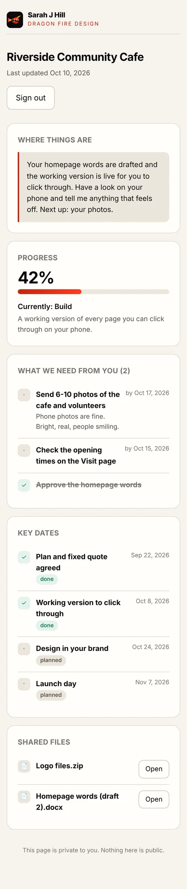

From hello to launch
What happens, and what it means for you.
Five stages, in plain English. You always know where we are and what’s next.
The brief: finding your real value
We talk about what you do, who it’s for and why you really need a website. I’ll ask questions nobody else asks, and some might feel a bit uncomfortable. If it never gets a little awkward, I haven’t dug deep enough. What it means for you: a website that sells what’s genuinely special about you, not a template with your name on it.
The plan: every page mapped
Within two working days you get a fixed quote and a plan with real dates. I map every page: who it’s for, what they need to see, and what you want them to do next. What it means for you: you know the price and the dates before you commit. No padding, no surprise bills. See a real plan I made earlier →
Built in the open
Instead of describing what I’ll build and hoping you follow my jargon, I build a working version you can click through on your own phone, while every task ticks off on your project page. What it means for you: you spot anything that’s not right early, when it’s quick to change, and you never have to chase me. Here’s one I made earlier →
The design: the fun bit
The working version gets dressed in your brand: your colours, your photos, your voice. Hand-made, so it’s fast and easy to use, not the usual bloated template. What it means for you: a site that looks and sounds like you, loads fast, and you can edit yourself. See finished sites →
Launch and connect
Tested on real phones and checked with Dragonfire, my own SEO tool. Then it goes live, I show you how to edit it, and I connect you with other female-owned businesses who’ll share your work. What it means for you: customers can find you on Google and in AI answers, and you’re not doing it alone.
See it in action
One project. Two views. Nothing hidden.
I run every project through the Dragon Fire Process. You get your own private page that shows the same project in plain English.


Screens show a demo project. Scroll inside each one.
A better way to communicate
No chasing. No “any update?” No lost emails.
Most projects go wrong in the gaps between messages. Your project page closes them.
- Where things are, in plain English. A short note from me at the top, updated as we go. No jargon.
- Exactly what I need from you, and by when. Never a vague “waiting on you”. You tick it off and I see it.
- Real dates you can plan around. Every milestone, marked done or coming up, so launch day doesn’t drift.
- Every file in one place. Logos, photos and words, not scattered across WhatsApp, email and texts.
- A human when you need one. Questions get an answer from me, usually the same day.

Expertise
Trained not to miss a single part.
I’m a full-stack developer trained at Code Institute, and I’ve studied how the best web agencies run their projects. The Dragon Fire Process turns that into a checklist I follow on every single build.
- The same 69 checks, every time. Quality doesn’t depend on whether I’m having a good day.
- Best practice built in. Accessibility, speed on a cheap phone, security and clean code, checked before launch.
- Found, not just finished. Every site goes through Dragonfire, my own SEO tool, for Google and AI search.
- One person who understands the whole build. Words, design, front end and back end, so nothing gets lost in a hand-off.
Who I work with
Bold. Brave. Ballsy.
I work with women who want to make a real difference: founders, tradeswomen, charities and community groups who do what they mean and mean what they say. If you’re tired of being underestimated and ready to claim your space, we’ll get on.
This is a woman’s world. It’s yours. Let’s build it.